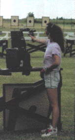
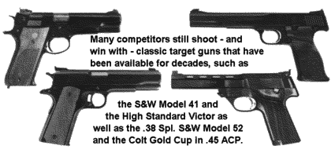
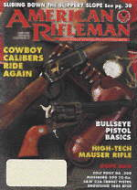

Lots of challenging and entertaining handgun shooting competitions have come along in the recent years, but the demanding old 2700 game grows ever more popular.

| Understanding Bullseye Pistol Shooting |
|
The classic outdoor pistol match is called a "2700." Shooters fire 270 shots with a maximum value of 10 points each, hence the name. Those 270 shots are divided into three 90-shot events, fired with .22, center-fire and .45 pistols. This format got its start as a way to combine shooting with the civilian's .22, the police officer's .38 revolver and the military man's .45 autoloader. As .45 accuracy improved, however, shooters began to use the .45 for both center-fire and .45 matches, and today it is rare to see a pure center-fire pistol. The 90-shot, 900-point aggregate consists of four matches: slow-fire, the National Match Course, timed-fire and rapid-fire. Slow-, timed- and rapid-fire are 20-shot events, but the National Match Course has 30: 10 shots slowfire at 50 yds;. and 10 each timed- (five rounds in 20 seconds) and rapid- (five rounds in 10 seconds) fire at 25 yds. The sustained-fire stages are timed by turning the targets perpendicular to the firing line until the time for shooting begins. They turn to face the shooter, then swivel back to their starting position when time expires. While a full-fledged 2700 is fired at 25 and 50 yds, proportionally reduced targets make it possible to fire all stages at 20 or 25 yds. or indoors at 50 ft. The targets used in outdoor competition have a tie-breaking X-ring of 1.695" diameter and a 10-ring 3.36" in diameter. The 50-yd. target's 8, 9 and 10 rings are black, while only the 9 and 10 rings are black on the 25-yd. sheet, so the sight picture is similar, despite the difference in distance. While a big 2700 match is an all-day affair, NRA recognizes many shorter courses of fire, and many clubs and leagues firing indoor matches use the Gallery Course. It has a single 10 minute, 10-shot slow-fire stage and two five-shot strings each of timed- and rapid-fire. With preparation periods, one relay can take less than 20 minutes. One of the appealing features of conventional competition is the multiple opportunities to win. At the National Matches, and even at large state or regional events, awards are presented for every match and for sub-aggregates. When each of these is multiplied by the many different classes and categories possible at a big match, there can be hundreds of opportunities to win. The NRA classification system groups shooters of similar ability into one of four classes that range from Marksman up to the top-level Master. Shooters may be further grouped into categories--juniors, women, collegians, police and service members. For more information, call NRA's Bob Piccoli at (703) 267-1451. |
Time limits are generous and the scoring rings of the targets are, by comparison with the international target, enormous. It isn't hard to put a bullet in the l0-ring. The hard part is trying to put most of them there.
A score of 2600 or more remains, after all these years, the four-minute mile of conventional pistol shooting. When Hershel Anderson set a national record that has stood for around three decades by firing 2680x2700, he was asked how he did it. His reply, reported as, "I didn't shoot too many nines" was a masterful understatement.
For me, slow-fire was always the most difficult event because there was more time for something to go wrong. The basic requirements are to establish sight alignment (the relationship of the front and rear sights), sight picture (the relationship of the aligned sights to the target) and to cause the pistol to fire (trigger control) without disturbing either the sight alignment or sight picture. But a fact of physiology remains to bedevil shooters. Nobody can hold a gun perfectly still. Convincing yourself that there will always be some movement in the sight picture is hard. With red-dot sights, that little red dot literally dances before your eyes, making even a tiny amount of movement more noticeable.
This inevitable motion is "minimum arc of movement" (sometimes called wobble area), and it is very much a complex physiological response. The movement must be accepted and concentration directed to keeping the sights aligned and exercising proper trigger control. If we do, the shot will still be good.
Building and maintaining concentration is paramount. In slow-fire, where you have the luxury of time, you can go through a little ritual of preparation for each shot. I try to visualize the sight alignment and picture a perfect shot, and then I keep that image in mind as I raise the gun. As the gun is coming up, I try to superimpose the mental image over the real one and establish sight alignment; holding it as the gun rises slightly above the target and gradually settles into a natural position that is, hopefully, a perfect six o'clock hold at the bottom edge of the target.
This "natural point of aim" is controlled primarily by the position of your feet. and is determined by extending your shooting hand toward the target, closing your eyes, wobbling your arm around, and letting it settle to a natural position. When you open your eyes, your hand should be pointing squarely at the center of the target.
If it isn't, you move your back foot and repeat the exercise until you get it right. With practice, you learn a stance that does this almost automatically.
As the gun begins to settle, there is a brief period of time, perhaps five seconds, when things are relatively unstable, followed by another interval of 5-10 seconds when the hold or sight picture is optimum. After that. muscle fatigue causes the hold to deteriorate, and if the shot isn't fired within about 20 seconds, the gun must be put down.
Here lies one of the most difficult challenges in shooting. If, after awhile, the shot won't break, there's an almost irresistible urge to get rid of that round so you can go on and do a better job with the next one. It takes a lot of discipline to make yourself bring the gun down and relax a bit instead of fighting awhile longer in hopes of making it come out all right. The inevitable result of this, if you give in, will be a jerked shot. One of the difficult things to learn is to "call" your shots. This is done by relating the shot's point of impact on the target to the face of an imaginary clock. While this is a very basic part of serious shooting, it demands intense concentration to know exactly where the sights are at the moment the shot breaks and to recognize whether there were any shooter errors. Sometimes the first sign of a flinch or trigger jerk is the location of the bullet's impact.
The technique for timed- and rapid-fire really isn't much different, with the obvious exception of the time limits.
I use the range officer's commands as cues to indicate where I should be in my preparation for the string. When the command to load is given, I get my feet where they're supposed to be and establish a proper firm grip on the gun. Then I rest the gun on the bench and begin breathing deeply, simply taking a series of slow, deep breaths. When the range officer says "ready on the right," I raise the gun above the target and begin to lower it so that by the time he finishes saying "ready on the firing line" the sights are aligned on the edge of the target right where the bottom of the black center will be when the targets turn into their facing position. My ideal string will have the first shot break just as the target is fully faced, allowing the maximum amount of time for the other four shots.
The mental change of gears to go from timed-fire to rapid-fire is hard to analyze, but my observation is that most of us don't
use the full 20 seconds of timed-fire. If that's the case, then going to rapid-fire doesn't really require doubling the pace. Good range officers are a gift to shooters, for it really helps if they are consistent and deliver their commands the same way each time .
One of the hardest things is dealing with the everyday distractions that attend pistol matches. You know, people talking and prowling around behind the line or even slamming car doors in the nearby parking lot. Little disturbances we'd usually never even notice can achieve monumental proportions when you're trying to shoot. We're told to "ignore them" but a better technique is to analyze the noise and determine whether it's something that should concern you. Same for all the rest of them. This is easier said than done, but learning to deal with these things effectively is the key to real achievement in the shooting world.
The same applies to match pressure. Some shooters study the scoreboard intensely, while others won't go near it at gun point. One of the axioms of pistol shooting is that you usually beat yourself.
The best way I know to learn to manage these things is to face them often. There is no substitute for shooting under match conditions
The things the human brain can do are remarkable, and concentration, to the exclusion of everything around you, is an awesome experience. I've been on the firing line at Camp Perry with hundreds of competitors shooting .45 rapid-fire at the same time and never heard the first bang. Professional athletes have begun to talk about something they call "being in the zone." This is a state of super-concentration where you can sometimes do remarkable things.
Shooters report that it seemed as if they were able to guide the bullet to the X-ring by nothing more than willpower. Another analogy might be to describe it as going on autopilot where the proper fundamentals of sight alignment and trigger control are applied almost effortlessly. It's been said often enough to become axiomatic: shooting is 10% physical and 90% mental. Although some may argue about the percentages, 1 don't believe anyone would dispute that the physical skills required for shooting are not that difficult to acquire for most people.
The mental management techniques needed to achieve a high level of performance are, however, staggeringly difficult. Dr. Bud Ferrante has served as team psychologist for the U.S. Shooting Team and Olympic athletes as well. "The specialty area of sports psychology has evolved rapidly over the last 10 years," Ferrante explained. "Individuals representing elite world-class organizations all the way down to youth sports have utilized sports psychology practitioners to improve their athletic performance as well as enhance their capacities."
Shooters learn techniques for relaxation, awareness, concentration and visualization. While the basic techniques may be generalized, their application is very much an individual thing, so Ferrante's work has included group seminars on specific topics combined with one-on-one work to develop a method for each individual. "Don't worry about score. Don't take it personally, it's not a measure of your self-worth, it's just your score. Don't compare yourself with other people. That's a great error that can hold you back," he said.
Instead, he suggests, concentrate on "performing the shot." We've always been told to take it one shot at a time and try to get all the elements, stance, grip, trigger, sights and follow through to come together for one good shot. Ferrante suggests that we analyze the shot in terms of what felt good and what felt bad and learn from it.
Ferrante agreed with my comments about outside distractions. "You can't separate the shooter from the world," he added. Talking with Ferrante and Kimberly Whitchard, another sports psychologist, I asked for a proper name for the "zone" phenomenon. Ferrante used the term "flow" to describe the same thing and likened it to a Zen philosophy of "stilling the mind."
Whitchard, who has worked extensively with professional golfers, compares it to a state of self-hypnosis that can be almost trance-like. Her experience is that the condition can be learned and some people can achieve it almost at will.
But whether your aspiration is to become a world-class shooter or simply have fun. conventional pistol, bullseye if you prefer, is a great way to improve shooting skills. It is also excellent training for all the other pistol-shooting events. Once you've mastered the basic elements of sight alignment and trigger control they are applicable to every shooting game.
Since bullseye pistol is a test of pure accuracy, it's logical to conclude that it requires the most accurate guns. New shooters often believe they don't need the best equipment because they lack the skill to take advantage of it. The truth is that they're the ones who will benefit most from having the best.
If a clunker .45 is only capable of shooting 8" groups at 25 yds., what chance does a new shooter have of learning anything? This is not to discourage new shooters from getting started with a gun or guns they already own, but they should realize that a gun's accuracy limitations can lead to frustration when it is time to retrieve
It is also imperative to know what sort of accuracy your gun/ammunition combination can deliver. A few groups fired from a good rest will answer the question, but it's important to have a baseline.
Buying factory ammunition is expensive these days, but it is no longer safe to assume that good handloads will be better. In fact, it takes a lot of hard work to make handloads that will equal the accuracy of today's factory match loads. So the first step is to find out what the gun will do with good factory ammunition and then perhaps try to duplicate those results with lower cost handloads.
The .22s are probably the most ammunition-sensitive, and it's quite remarkable to see how a particular gun will display a preference for one brand or type over another. Once again, testing is the only way to find out.
Match-grade .22 ammunition usually does shoot better groups, but the difference between it and regular standard velocity ammo may not be dramatic. That the cost difference, at retail, can be nearly 10 times higher would seem to be a powerful incentive to try some of the less costly alternatives.
The guns that are popular now are little different from those popular 20 years ago and, other than the red-dot sights many of us use, things really haven't changed very much in terms of basic equipment. Even though the game is called three-gun, use their .45s in the center-tire portion of the match. This isn't done to just save the cost of another gun, but because it's the best way.
Those who have shot one of the .38 Spl. M1911Al conversions or the S&W Model 52, the usual alternatives to the .45 in center-fire matches, probably loved it, for the soft recoil of the .38 makes the .45 seem almost punishing, but I can tell you from bitter experience that the times the .38 will help you are far outnumbered by the times it will hurt.
Using the .45 eliminates having to learn another gun. Even if the .38 is built on the same frame, the different recoil and follow-through requirements complicate things needlessly. A Master-class shooter may benefit from using a .38 Spl. semiauto conversion, but others should evaluate them carefully.
Equipment surveys at Camp Perry have changed little over the years. The S&W Model 41 and High Standards dominate the .22 events, with a few Rugers and imports thrown in for variety.
The demise of old High Standard was bad news, but there are still plenty of the older guns out there, and they are undeniably popular. Fortunately, High Standard parts and service are still readily available. and High Standard Mfg. and Stoeger are making High Standard target guns again.
As far as the .45 is concerned, Colt guns are still the leaders, but the Springfield
form the basis of good guns. Most guns, in my opinion, even the Model 41, need a trigger job, and most .45s need a lot more.

For bullseye guns, the accuracy standards must measure up on the most difficult Portion of the course, 50-yd. slow-fire. If the gun/ammo combination isn't capable, at the minimum, of keeping every shot within the l0-ring. a shooter can lose points and never know whether it was his fault or the guns.| Getting Started: |
|
Due to the popularity of bullseye pistol, there is a probably a club or a range near you that holds outdoor or indoor matches. A few matches are given in the "Regional Report" and a comprehensive listing is part of Shooting Sports USA (available by calling (703) 267-1583). For more information on the sport, contact: Bob Piccoli, manager of NRA Competitions' Pistol Dept. at 11250 Waples Mill Rd., Fairfax, VA 22030-9400, (703) 267-1451. |
|
 |
This article is a mirror of one of the same title from the June 1997 issue of the American Rifleman, the Official Journal for members of the National Rifle Association. This periodical is so good that it alone would justify the annual membership dues if there were no other benefits! |